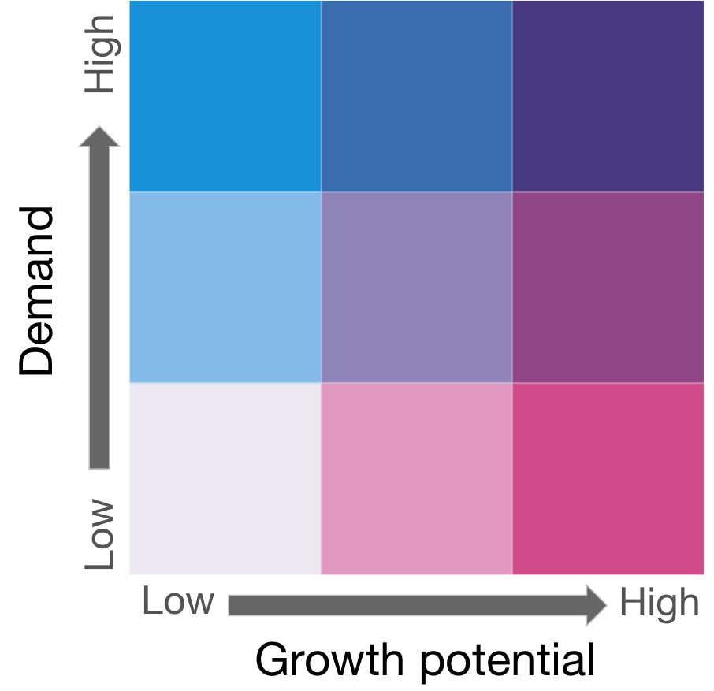

World-wide demand for visiting UK
This dual scale choropleth map simultaneously visualizes the number of issued visas (i.e. demand) vs the number of enquiries about visas (i.e. growth potential).
One or more countries can be selected for sub analysis by clicking on them.

Figure 1: Correlation of categories for demand and growth
Reset All